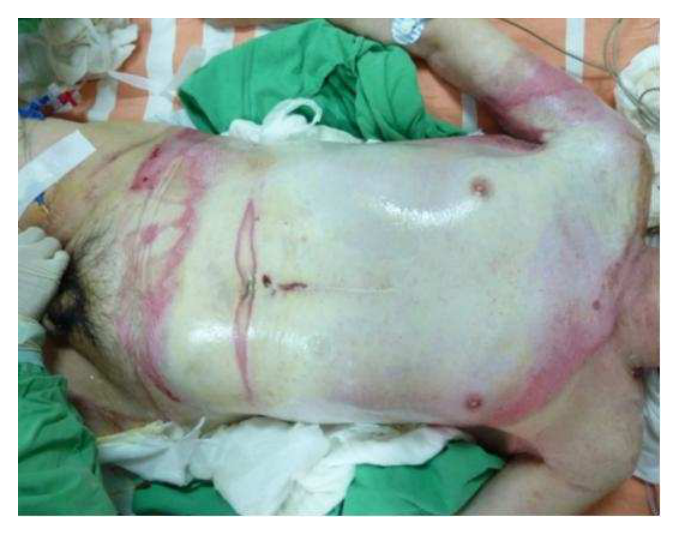

醫師醫學（五）（包括外科、骨科、泌尿科等科目及其相關臨床實例與醫學倫理）歷屆試題
開卷有益收錄醫師「醫學（五）（包括外科、骨科、泌尿科等科目及其相關臨床實例與醫學倫理）」民國 104–115 年的歷屆試題，共 22 份考卷、1,760 題，其中 1,760 題附有逐題詳解。每一份考卷都有獨立頁面，可以整卷看題目與答案，也可以直接線上作答。
線上練習 醫學（五）（包括外科、骨科、泌尿科等科目及其相關臨床實例與醫學倫理） →
本科概況
| 科目 | 醫學（五）（包括外科、骨科、泌尿科等科目及其相關臨床實例與醫學倫理）（醫師） |
|---|
| 題數 | 1,760 題 |
|---|
| 考卷份數 | 22 份 |
|---|
| 涵蓋年份 | 民國 104–115 年 |
|---|
| 詳解 | 1,760 題（100%） |
|---|
| 資料來源 | 考選部「國家考試試題及測驗式試題答案」開放資料 |
|---|
| 費用 | 免費，不需註冊，無廣告 |
|---|
第二階段臨床醫學：外科、骨科、泌尿科等，含臨床實例與醫學倫理。
歷年考卷（22 份）
點任一年度可看整份試題與標準答案。
題目長什麼樣
以下自本科題庫抽 5 題示例，完整題目請看上方各年度考卷。
第 1 題
有關小孩外傷的敘述，下列何者最適當？
- （A）小孩的頭皮撕裂傷流血，容易造成失血性休克
- （B）由於小孩的肋骨仍在發育中，當胸部受到撞擊時會比大人容易有肋骨骨折
- （C）比起成年人，小孩的肝脾臟受到胸廓（rib cage）的保護部分較多
- （D）脾臟破裂採取非手術療法處置，比成人有較低的成功率
答案：（A）
詳解與考點
正解：小孩頭皮血管豐富，頭皮撕裂傷即使外觀傷口不大也可能持續大量出血；嬰幼兒的循環血量較少，失血較容易迅速造成失血性休克，故（A）最適當。兒童外傷不能以骨折與否排除內臟傷害，必須依生命徵象與受傷機轉評估。
B：兒童肋骨較有彈性，胸部鈍傷時反而未必骨折；但力量仍可傳至肺部或胸腹腔臟器。因此「比成人容易肋骨骨折」把兒童胸廓柔韌性的臨床意義說反了。
C：兒童胸廓對肝、脾的保護較成人少，因肋骨較水平、胸廓包覆範圍較有限，肝脾也相對較容易受傷，故不符。
D：血流動力學穩定的兒童脾臟破裂，非手術治療的成功率通常很高；這是兒童腹部鈍傷的重要處置原則，並非較成人低。
本題考點：兒童外傷（pediatric trauma）——兒童循環血量少，頭皮傷可造成顯著失血；兒童胸廓柔韌，無肋骨骨折仍可能有胸腹腔臟器傷；脾臟損傷的非手術治療（nonoperative management）須以血流動力學穩定為前提。
第 33 題
有關克隆氏症（Crohn's disease），下列敘述何者最恰當？
- （A）是可藉由手術治癒的疾病
- （B）主要侵犯在大腸
- （C）相對好發於社經地位較高者，且抽菸是其危險因子
- （D）容易有腸道以外的症狀，且 pyoderma gangrenosum 和 ankylosing spondylitis 與腸道發炎之嚴重程度成正相關
答案：（C）
詳解與考點
正解：Crohn's disease 為慢性、復發性發炎性腸病，流行病學上較常見於工業化及較高社經環境，而吸菸會增加發病與較差病程風險，故最恰當的是 C。
A：手術可處理狹窄、瘻管或膿瘍等併發症，但病變可在其他腸段復發，不能藉手術治癒。
B：Crohn's disease 可侵犯口腔至肛門任何部位，最常累及末端迴腸與結腸，不能說主要只侵犯大腸。
D：腸外表現確實常見；但 pyoderma gangrenosum 與 ankylosing spondylitis 不都與腸道發炎嚴重度成正比，後者常可與腸道活動度無關，故不恰當。
本題考點：Crohn's disease——可有 skip lesions 與全消化道侵犯；吸菸是危險因子；手術治療併發症但非根治；extraintestinal manifestations 的活動度相關性各異。
第 65 題
下列有關肌肉侵犯型膀胱癌的敘述，何者最正確？
- （A）約10%病人接受膀胱根除術後，會發生轉移
- （B）標準治療是直接施行膀胱根除手術（radical cystectomy）
- （C）合併水腎（hydronephrosis）時，預後較差
- （D）腎臟功能不好，施行膀胱根除手術時應作原位膀胱（orthotopic neobladder）重建
答案：（C）
詳解與考點
正解：肌肉侵犯型膀胱癌（muscle-invasive bladder cancer, MIBC）的不良預後線索。水腎（hydronephrosis）常反映腫瘤侵犯輸尿管開口、造成尿路阻塞或局部較進展的疾病，因此與較差預後相關，故選 C。
A：膀胱根除術後的復發與遠端轉移風險並不低，將轉移概括為僅約 10% 過度低估，敘述不正確。
B：可切除的 MIBC 常需評估以順鉑為基礎的術前全身治療，再進行膀胱根除術；直接手術並非所有患者一律的完整標準策略。它看似抓到根除術的重要性，卻忽略術前全身治療的角色。
D：原位膀胱（orthotopic neobladder）須考量腎功能、排尿能力與腫瘤條件；腎功能不佳通常不是優先選擇原位膀胱重建的理由。
本題考點：肌肉侵犯型膀胱癌（MIBC）的根治性治療；術前全身治療（neoadjuvant systemic therapy）；水腎（hydronephrosis）作為較進展疾病的預後線索。
第 17 題
35歲男性病人因騎機車車禍而頭部受傷，送至急診室，經檢查無顱內出血情形，主要症狀為右側頭皮裂傷（avulsion injury）和傷口出血，下列敘述何者錯誤？
- （A）頭皮可分為皮膚、皮下組織（subcutaneous tissue）、腱膜（galea aponeurotica）、疏鬆蜂窩組織（looseareolar tissue）和顱骨膜（pericranium）五層
- （B）若病患於急診留觀期間，傷口持續出血不止，最好的方法為加壓止血合併輸血治療
- （C）若有頭皮缺損範圍較大（4～8 cm2），無法直接縫合者，除了局部皮瓣外，可以考慮使用組織擴張器（tissue expander）
- （D）若有頭皮缺損範圍較大（8～10 cm2），考慮使用游離皮瓣顯微重建手術治療
答案：（B）
詳解與考點
正解：頭皮撕裂傷持續出血時的處置不能只停留在加壓與輸血。頭皮血管豐富且固定於緻密結締組織，受傷血管不易自行回縮；持續出血應直接辨認並結紮或縫合止血，輸血僅用於需要復甦的情況，故（B）錯誤，選 B。
A：頭皮由皮膚、緻密皮下組織、腱膜、疏鬆結締組織與顱骨膜組成，這是標準五層解剖，故敘述正確。
C：較大而無法直接縫合的頭皮缺損，可依缺損位置、血流與組織條件考慮局部皮瓣或組織擴張，敘述方向正確。
D：大範圍頭皮缺損若局部組織不足，游離皮瓣顯微重建是可考慮的重建選項，故不是答案。
本題考點：頭皮五層（SCALP layers）包含 skin、connective tissue、aponeurosis、loose areolar tissue、pericranium；頭皮傷口出血須做直接止血（definitive hemostasis）；頭皮缺損重建可用局部皮瓣、組織擴張或游離皮瓣。
第 49 題
下圖是一位80歲的病人，體重60公斤，因洗澡跌倒被熱水燙傷，意識清醒下送往急診。請依此回答下列3題：下列敘述那些正確？①建立輸液管道 ②此為1～2度燙傷 ③2～3度燙傷 ④18%體表面積受傷 ⑤9%體表面積受傷

- （A）①②④
- （B）①②⑤
- （C）①③④
- （D）②③⑤
答案：（C）
詳解與考點
正解：圖中前胸腹部可見大片紅潤、濕潤的表皮剝離與水泡樣改變，部分區域顏色較深，符合2～3度燙傷的外觀。受傷範圍主要涵蓋軀幹前側，依成人九分法（rule of nines）約為18%體表面積；此範圍的燙傷應儘速建立輸液管道，評估並處置可能的體液流失，故①③④正確，選C。
A：此組合雖包含（A）①建立輸液管道及（A）④18%體表面積受傷兩項正確敘述，但（A）②僅為1～2度燙傷不符圖中部分較深、疑及全層皮膚的傷口外觀，因此不是正確組合。
B：此組合的（B）①建立輸液管道正確，但（B）②將傷口限定為1～2度，且（B）⑤將面積估為9%，均與圖示的深度及主要前軀幹受傷範圍不符。
D：此組合中的（D）③2～3度燙傷判讀正確，但（D）②與之互相矛盾；此外（D）⑤9%體表面積受傷低估了圖中前胸腹部大片燙傷範圍，故不正確。
本題考點：燒燙傷深度（burn depth）——水泡、濕潤紅色創面多提示部分厚度傷害，顏色較深或乾燥蒼白區須考慮全層傷害；九分法（rule of nines）——成人前軀幹約占18%體表面積；燒傷復甦（burn resuscitation）——較大面積燒傷須及早建立靜脈輸液管道並評估體液需求。
醫師其他科目
題目與標準答案出自考選部「國家考試試題及測驗式試題答案」開放資料，依《著作權法》第 9 條為非著作權標的，得自由利用；
本專案撰寫的詳解以 CC0 1.0 貢獻至公眾領域。詳解為 AI 整理的學習輔助，並非官方標準答案。